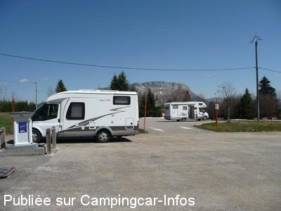
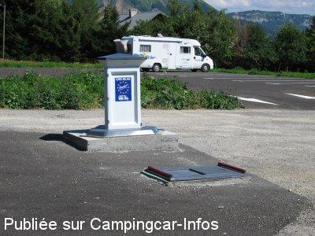

ASN = Aire de services avec stationnement nuit possible de :
LES DÉSERTS La Féclaz
(N° 235)
Accès/adresse :
La Féclaz
73230 LES DÉSERTS
73230 LES DÉSERTS
Latitude : (Nord) 45.64264° Décimaux ou 45° 38′ 33′′
Longitude : (Est) 5.98356° Décimaux ou 5° 59′ 0′′
Tarif : 2014
Stationnement : 4 €
2 nuits : 7 €
Électricité 1 H ou eau : 1,50 €
Jetons auprès de l'Office du Tourisme.
Type de borne : EURO-RELAIS
Services :


Autres informations :
40 emplacements
Sur deux plateformes de 20 CC chacune, emplacements délimités et larges, goudronnée, sans éclairage ni ombre
http://www.savoiegrandrevard.com

Le 30/04/2010 par Xtian74

Le 05/01/2005 par Michel 59
de
Josserand
le 28/02/2016 :
Lors de notre passage la borne ne fonctionne pas (plus d'eau), nous n'avons pas utilisé les autres services (vidange cassette, électricité...).
Des petits malins ont vidangés la cassette WC chimique sans pouvoir nettoyer les abords de la vidange car plus d'eau (vision pas très agréable...).
Sinon pas grand monde sur l'aire une dizaine de CC tout au plus.
Lors de notre passage la borne ne fonctionne pas (plus d'eau), nous n'avons pas utilisé les autres services (vidange cassette, électricité...).
Des petits malins ont vidangés la cassette WC chimique sans pouvoir nettoyer les abords de la vidange car plus d'eau (vision pas très agréable...).
Sinon pas grand monde sur l'aire une dizaine de CC tout au plus.
de
Xtian74
le 29/04/2010 :
A cette période de l'année, juste un CC sur l'aire, et donc la tranquillité ...
A cette période de l'année, juste un CC sur l'aire, et donc la tranquillité ...
de
Coco038
le 22/03/2009 :
Nous venons de passer 2 nuits sur ce parking très bien dégagé. 13 CC la 1ère nuit, puis 9 la 2ème. Les prix ont évolués: 3,5€, la 1ère nuitée puis 3€ mais les jetons sont payants alors qu'il y a 1 mois, ils étaient gratuits ????? A voir.
Nous venons de passer 2 nuits sur ce parking très bien dégagé. 13 CC la 1ère nuit, puis 9 la 2ème. Les prix ont évolués: 3,5€, la 1ère nuitée puis 3€ mais les jetons sont payants alors qu'il y a 1 mois, ils étaient gratuits ????? A voir.
de
seb69
le 03/03/2008 :
Nous avons passé 2 nuits mi février. Calme, agréable, parking propre, borne plutot facile utilisation et en très bon état. Conseillé pour famille.
Nous avons passé 2 nuits mi février. Calme, agréable, parking propre, borne plutot facile utilisation et en très bon état. Conseillé pour famille.
de
Robert
le 07/01/2008 :
Nous y sommes restés 3 nuits début janvier. Tarif dégressif 4€, 3,50€, 3,00€... 1 jeton gratuit par jour. La borne est simple mais fonctionne. La station est sympathique et familiale. Nombreuses possibilités de balades en raquettes. Excellente neige en ce début 2008!
Nous y sommes restés 3 nuits début janvier. Tarif dégressif 4€, 3,50€, 3,00€... 1 jeton gratuit par jour. La borne est simple mais fonctionne. La station est sympathique et familiale. Nombreuses possibilités de balades en raquettes. Excellente neige en ce début 2008!
de
lansalot
le 25/08/2006 :
Au pied des pistes, très belle aire de stationnement gratuite l'été, 1€ pour les services. Dommage il manque des bornes électriques car en plein hiver comment faire pour se chauffer avec 1 heure d'électricité et deux prises pour 50 CCars? Cependant elle est mal indiquée.
Au pied des pistes, très belle aire de stationnement gratuite l'été, 1€ pour les services. Dommage il manque des bornes électriques car en plein hiver comment faire pour se chauffer avec 1 heure d'électricité et deux prises pour 50 CCars? Cependant elle est mal indiquée.